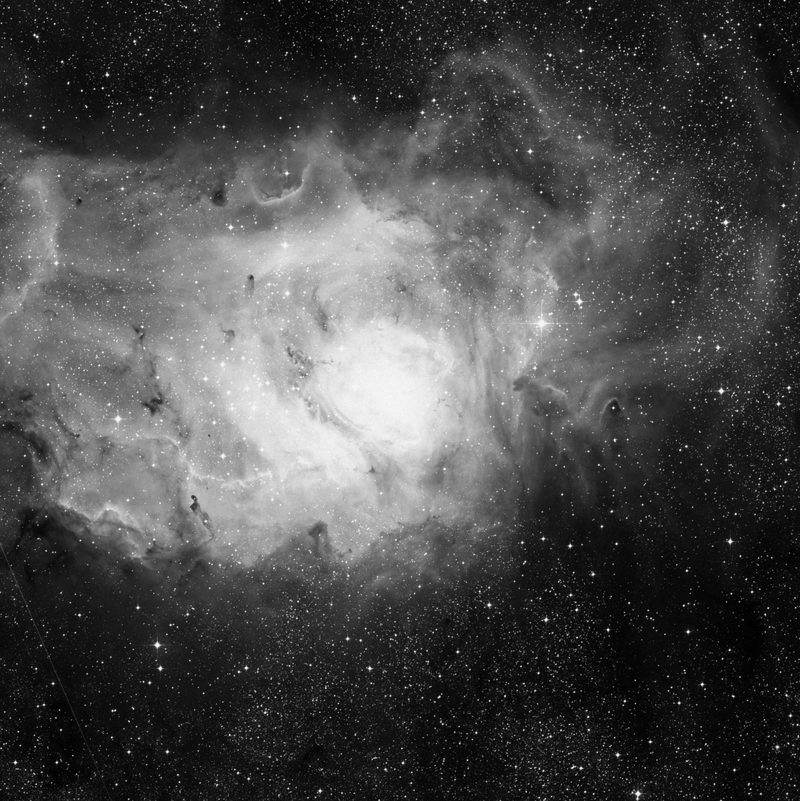
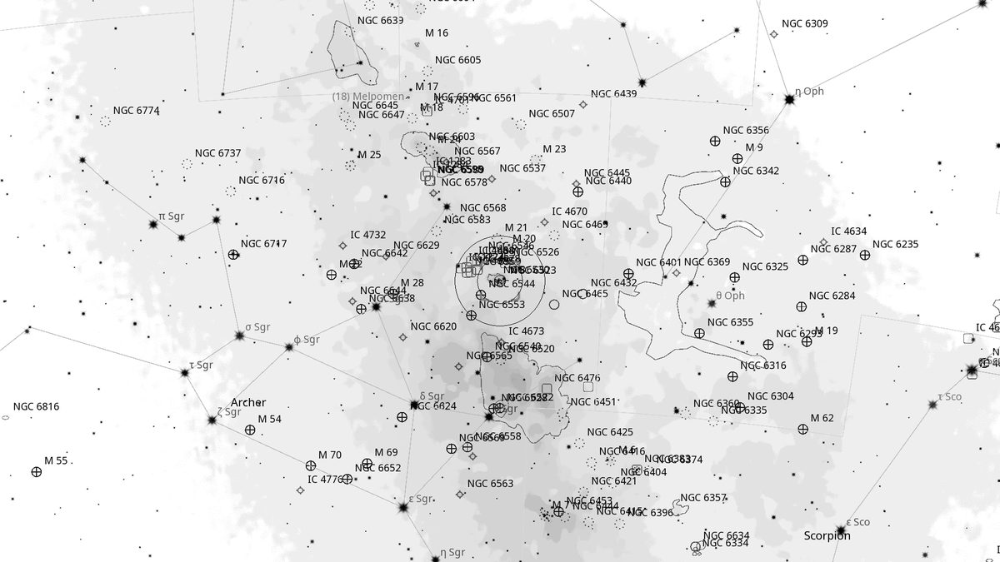
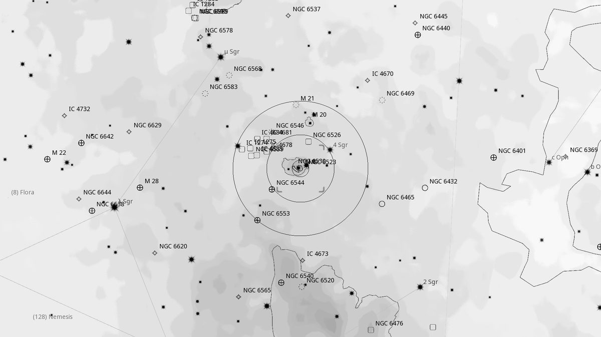
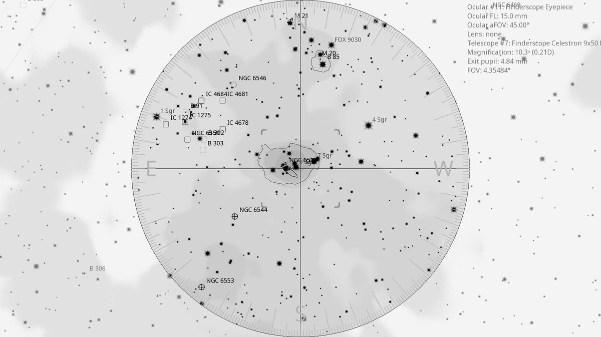
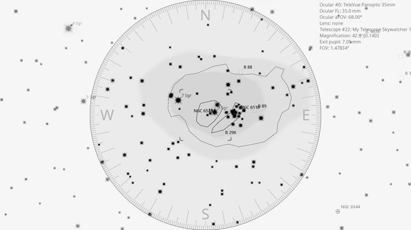

M 8 (EN)
| R.A. | Dec. | Size | Mag | SB | Cnt.St | Type | Distance | Chart |
|---|---|---|---|---|---|---|---|---|
| 18h 03m 37.8s | -24° 22′ 40.5″ | 1.5° | 6.0 | 14.6 | 3, 3, 3 | EN | -- | -- |

Background
M8 is the Lagoon Nebula — one of the brightest emission nebulae in the sky, 4,100 light-years away in Sagittarius. Naked-eye visible above the Sagittarius “teapot”. Energised by the embedded young open cluster NGC 6530 and the O-type star Herschel 36, with prominent dust lanes giving it the distinctive “lagoon” shape.
My Observing Notes
25-cm (Meade 10-inch LX200, The Coffee Grinder): Naked-eye visible above the handle of the “frypan”. With a borrowed 26 mm Nagler the wide field captures the true scale of the nebulosity and majestic twisted lanes of dust. Combined with the embedded NGC 6530 this vast star-forming region is truly magnificent. (Featured in the inaugural photos from the Vera Rubin Telescope released the same weekend.)(Saturday, June 2025)
25-cm (Meade 10-inch LX200, The Coffee Grinder): With the 35 mm Panoptic in (which I didn't have in June), the wider field accommodates the full sweep of nebulosity beautifully — well worth the return visit.(Saturday, August 2025)
References
Charts



